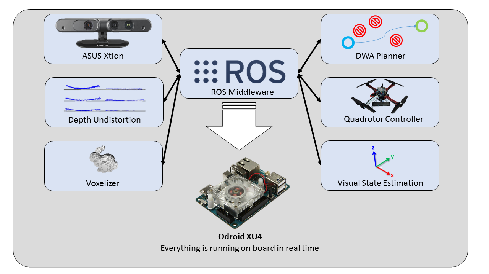

Software description

The full system run using ROS middleware in realtime on the onboard computer.
The choosen operating system is Ubuntu 14.04 LTS armhf and ROS Indigo
The main components are the following:
- Thin_Astra ros node to use the ORBBEC RGBD camera
- Thin_Xtion ros node to use the ASUS Xtion RGBD camera
- EasyDepthCalibration ros node to undistort depth data from RGBD sensor
- Voxelizer needed to subsample the depth data
- Quadrotor controller
- Visual state estimation provides attitude, position and velocities to the quadrotor controller
- DWA planner